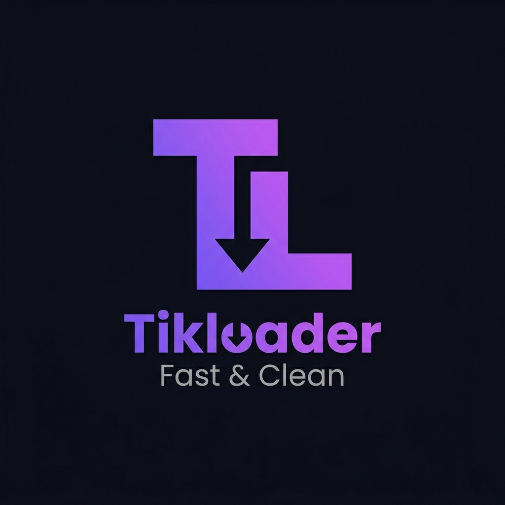

Mendownload video TikTok tanpa watermark dengan mudah. Tempel URL video untuk mendownload tanpa watermark.

Fast & Clean
Sedang memproses tautan...
TikLoader adalah platform web downloader modern yang dirancang khusus untuk mengunduh video TikTok secara instan tanpa hambatan. Dikembangkan dengan focus pada kenyamanan pengguna, platform ini memungkinkan siapa saja untuk menyimpan video favorit mereka langsung ke penyimpanan perangkat dalam hitungan detik. Cukup tempel tautan, klik tombol, dan video siap dinikmati kapan saja.